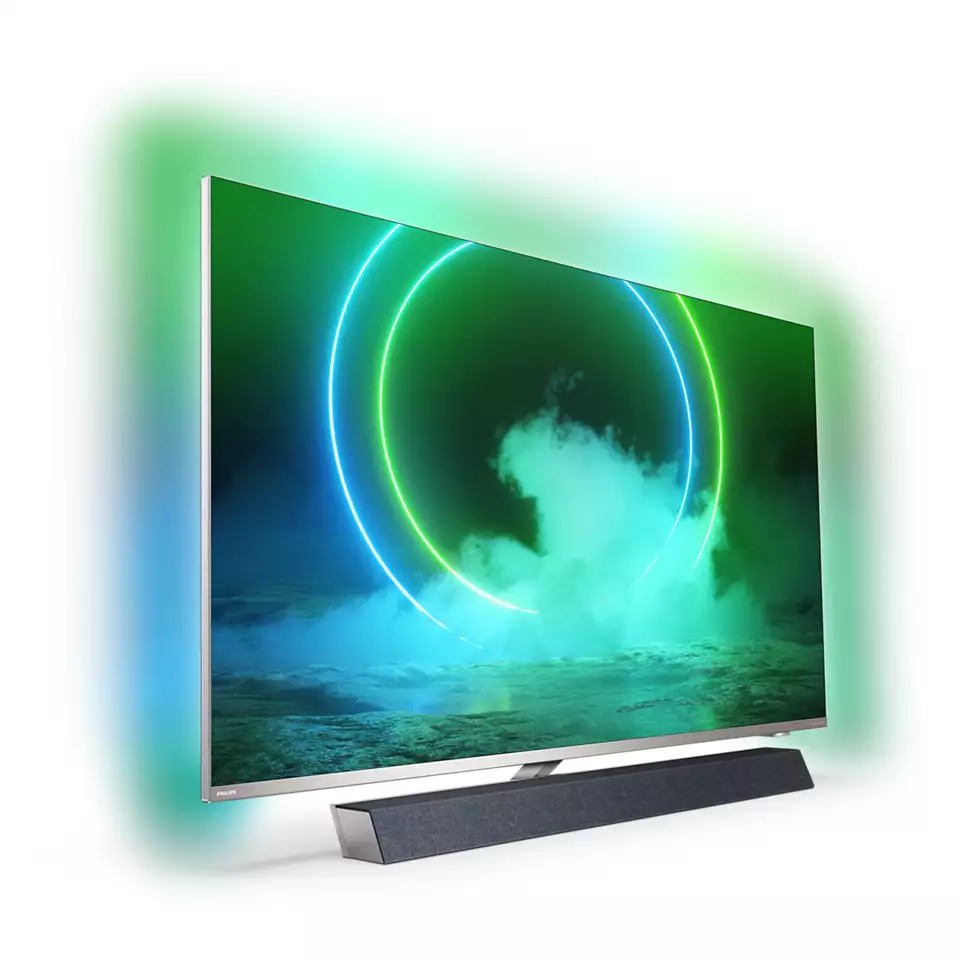
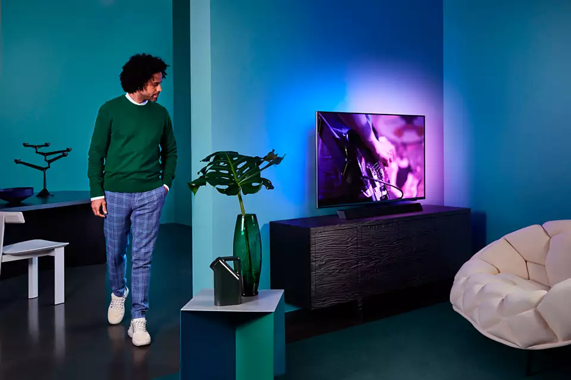
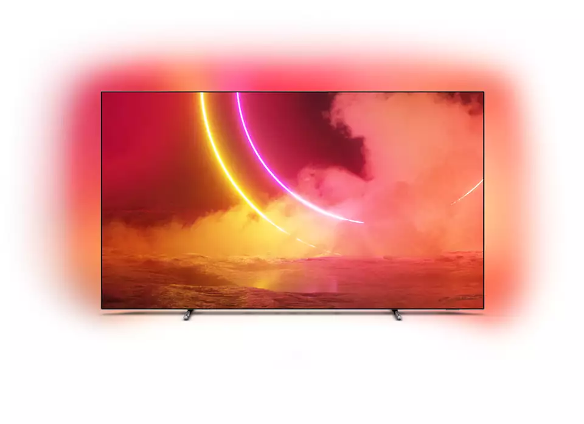
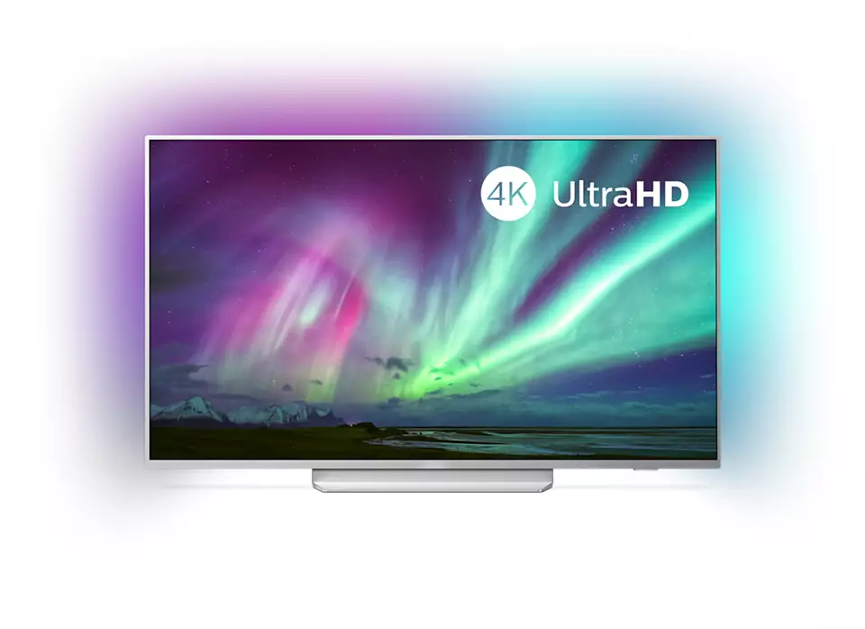

 Etkileyici ses. Bowers & Wilkins, Dolby Atmos ile bir araya geliyor. PaEfsanevi ses mühendisleri Bowers & Wilkins'in özel hoparlör tasarımı, olağanüstü gerçekçi performans sunar. Yukarı çıkışlı hoparlörler, Dolby Atmos'tan en iyi performansı almanıza imkan tanır. Olaylar ne kadar heyecanlı olursa olsun, merkezi tweeter kusursuz diyaloglar sunar. Ambilight. Duyguyu ekranın ötesine taşır. Philips Ambilight, filmleri ve oyunları daha sürükleyici hale getirir ve müzik akışına ışıklarla eşlik eder. Üstelik, ekranınız olduğundan çok daha büyük görünür. TV'nin kenarlarındaki akıllı LED'ler, ekrandaki renkleri gerçek zamanlı olarak duvarlara ve odanın içine yansıtır. Philips Ambilight, ortamınızı mükemmel biçimde aydınlatır. En sevdiğiniz içerikleri bu muhteşem TV'de deneyimleyin. Philips P5 Motoru. Kaynak ne olursa olsun, her zaman mükemmel. Philips P5 motoru ile artık sevdiğiniz içerikler çok daha parlak. Ayrıntılar gözle görülür ölçüde daha fazla derinlik kazanır. Renkler daha canlı, cilt tonları ise daha doğal görünür. Kontrast o kadar nettir ki her ayrıntıyı hissedebilirsiniz. Hareketler son derece akıcıdır.  Teknik Özellikler Ambilight Özellikleri 3 taraflı Dahili Ambilight+Hue Ambilight Müzik Oyun Modu Duvar rengine uyarlanma Dinlenme modu AmbiWakeup AmbiSleep Ekran/Görüntü Özellikleri 4K Ultra HD LED 55 inç/139 cm/3840x2160 P5 Perfect Görüntü Motoru Geniş Renk Gamı %90 DCI/P3 Dolby Vision Ultra Çözünürlük Dolby Vision HDR10+ 2400 PPI Detaylı Bilgi İçin Bkz. EPG ve gerçek görünürlük (8 güne kadar) ülkeye ve operatöre bağlıdır. Android Uygulaması teklifleri ülkeden ülkeye farklılık gösterir. Daha fazla bilgi için lütfen ülkenizdeki Google Play Store'u ziyaret edin. 365 gün boyunca günde 4 saat çalışan bir televizyonun güç tüketimine dayanan, yıl başına kWh enerji tüketimi. Gerçek enerji tüketimi televizyonun nasıl kullanıldığına göre değişir. TV, "Ücretsiz" yayınlar için DVB alımını destekler. Bazı DVB operatörleri desteklenmeyebilir. Güncel liste Philips destek web sitesinin SSS bölümünde bulunabilir. Bazı operatörler için Koşullu Erişim veya abonelik gerekmektedir. Daha fazla bilgi için operatörünüze başvurun. Philips TV Remote uygulaması ve ilgili işlevler TV modeli, operatör ve ülkenin yanı sıra akıllı cihazın modeli ve İşletim Sistemine göre farklılık gösterir. Daha fazla bilgi için lütfen şu adresi ziyaret edin: www.philips.com/TVRemoteapp. Smart TV uygulama teklifleri, TV modeli ve ülkeye göre farklılık gösterir. Daha fazla bilgi için lütfen şu adresi ziyaret edin: www.philips.com/smarttv. USB kayıt özelliği sadece dijital kanallarda kullanılabilir, kayıtlar yayın kopya koruması (CI+) tarafından sınırlanabilir. Ülke ve kanal kısıtlamaları uygulanabilir. Amazon Uygulamalarınız ülkenizde her zaman kullanıma uygun olmayabilir. (Amazon uygulamaları şu anda yalnızca Birleşik Krallık, Almanya ve Avusturya'da kullanılabilir) Bu televizyon sadece teknoloji alternatiflerinin olmadığı belirli parçalar veya bileşenlerde, RoHS Yönergesi maddeleri altında mevcut muafiyet ile uyumluluk gösteren oranda kurşun içerir. Bulut Oyun teklifi oyun sağlayıcılarına bağlıdır. *Bellek boyutu (Flash) : 16 G, mevcut disk alanı farklılık gösterebilir (ör. önceden yüklü uygulamalar, işletim sistemi vb. gibi özelliklere dayanır) Soundbar, hoparlör ve diğer ses cihazları için HDMI bağlantısı gereklidir. Diğer Modeller  4K UHD LEDTV 55OLED805/12  4K UHD LEDTV 55PUS8204/12